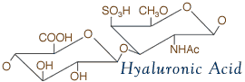
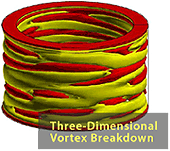

From James C. Hill
Iowa State University
Iowa
State University is recognizing this occasion by beginning its fall
semester classes on this day!! (OK, there may be other reasons for this
...)
From Julian Hunt
Isaac Newton Institute for Mathematical Sciences
Congratulations on your TAM day.We shall be in full 'flow' at the Isaac
Newton Institute programme on the paradigm problem of TAM, namely
Surface Water Waves. We shall drink a toast on Tuesday following the
INI seminar given by Alex Craik on Stokes and his successors!
From Egon Krause
Aerodynamisches Institut
We will follow your idea of celebrating TAM Day by publishing the latest result of our research on shock-induced vortex breakdown in supersonic flow.
From Fumio Higashino
Tokyo University
of Agriculture and Technology
Thank
you for your good information regarding TAM Day. Unfortunately I cannot
join in this year, since I am going to visit Aachen the last week of
August. Please have a good day on the TAM Day.
From Victor Eremeyev
Rostov State University
Thank you very much for your attention. It will be a field day!
I will celebrate the TAM Day in Perm with my friends-mechanicians.We
all meet together at the All-Russian Congress on Theoretical and
Applied Mechanics.
From George Jaiani
I.Vekua Institute of Applied Mathematics
The Georgian National Committee supports this very nice idea.
Happy TAM Day 2001!
From Art Koehler
The Procter & Gamble Company
I'd love to spend TAM day reading and enjoying... last year's proceedings of ICTAM 2000.
From Ken Chong
National Science Foundation
Excellent
idea! Why not open up your labs across the country to high school
science teachers on August 28 and introduce them to some of the
challenges/excitement of TAM?
From Michael Osipov
Samara State University
All participants in Perm will recollect your August 27 reception in Chicago 2000 and that this day is "TAM Day".
From Tanya Krasnopolskaya and Slava Meleshko
Kiev
We celebrated the 10th anniversary of Ukraine's independence. To mark
this occasion all lectures, which were accepted from Ukrainian authors
at the XX ICTAM were published in the special issue of "International
Applied Mechanics" (now in Russian, but later they will be translated
in to English). Today we are happy to be a part of our community of
mechanicians!
We wish you Happy TAM Day!
|
 |
From Elena Grekova
Institute for Problems in Mechanical Engineering
of Russian Academy of Sciences
As
to the TAM day, most of Russian participants of ICTAM 2000, and many
other Russian mechanicians will meet this day together in Perm (Ural,
Russia), since the All-Russian Congress on Theoretical and Applied Mechanics takes place there from 23 to 29 August of this year.
I suppose it will be a fit celebration of TAM Day!
From Mohamed Gad-el-Hak
University of Notre Dame
Since
I am almost as old as the discipline, I will drink a glass of
hyaluronic acid in an attempt to rejuvenate my synovial fluid and
relieve my aching cartilages!

It is alleged that synovial liquids are micropolar, non-Newtonian,
microrotating, and having almost vanishing coefficient of friction. A
synovial fluid is liquid-crystal-like, acting as a solid or as a fluid
depending on such external stimuli as temperature and pressure.
From Werner Schiehlen
University of Stuttgart, Institut B fuer Mechanik
It is a really great idea to designate the last
Monday in August as TAM Day:
At the University of Stuttgart nearly five hundred engineering students
took their first exam in Applied Mechanics. They worked on five problems
for two hours, and during the rest of the day discussions took place on
the most elegant solutions. Thus, on TAM Day TAM was the central topic
on our campus.
From Alexander V. Getling
Institute of Nuclear Physics
I will mark the TAM Day by my talk at the National TAM Congress in Perm.
Happy TAM Day 2001!
From Keith Moffatt
Isaac Newton Institute for Mathematical Sciences
In
recognition of TAM day, Monday 27th August has been declared a Bank
Holiday throughout the UK; also the Cambridge University Library has
declared that it will be closed for the day.
On a more
modest scale, we at the Newton Institute will, weather-permitting,
spend the daylight hours inaugurating the new Boules Court on the west
flank of the Institute.The ancient Basque game of Boules, otherwise
known as Petanque involves the rolling, spinning and collision of steel
balls, up to eight in number, and exploits to the full the dynamical
possibilities permitted by Newton's Laws of Motion, to which we here
are particularly addicted.
We
shall further celebrate by the ingestion at precisely 6pm (BST) of a
range of beverages of varying surface tension and viscosity.
My contribution to the website! A poem TAM-day musings, after Burns' TAM O'Shanter
From Mike Stubna
Cornell University
Although
the graduate students of the TAM department at Cornell will, of course,
be busily at work on TAM Day, we have occasionally been known to have a
little fun in celebrating "the premier science." For an example of our
TAMpride, you may like to check out our TAMBowl webpage.
From Vadim I. Polezhaev
Institute for Problems in Mechanics
of Russian Academy of Sciences
I
intend to point out the traditions of the Microgravity Mechanics
session from the well-organized ICTAM 2000 last year in Chicago.
Happy TAM Day 2001!
From Patrick Bontoux
Laboratoire de Modélisation et de Simulation Numérique en Mécanique
Please find these figures that illustrate recent results obtained
in the laboratory MSNM, Computational Fluid Mechanics. Great thanks for your entreprise in favour of our discipline.

|